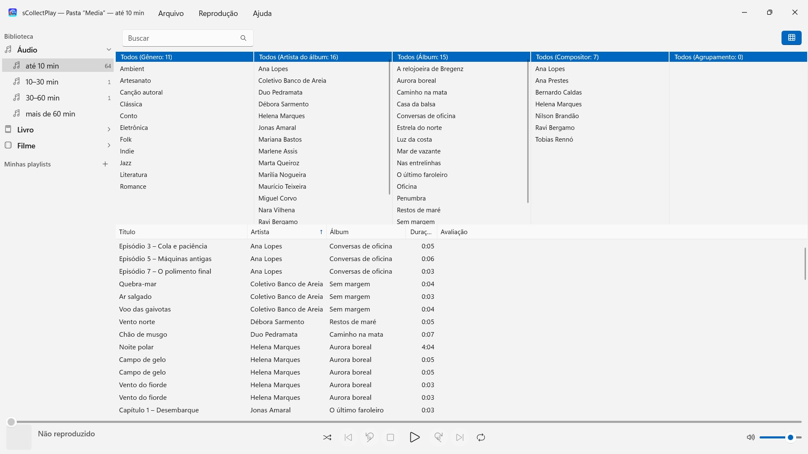
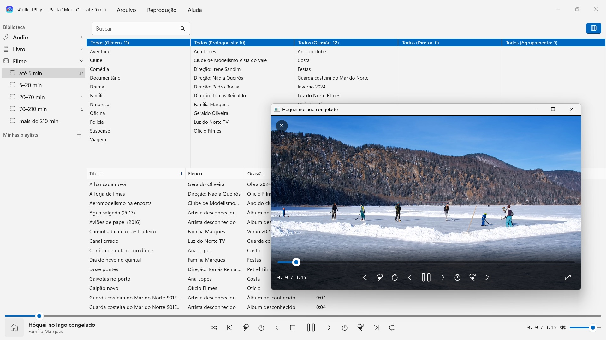

sCollectPlay
Escolha uma pasta e reproduza – sem importação, sem copiar nada
Na Microsoft Store a partir de novembro de 2026Escolha uma pasta e reproduza: músicas, audiolivros, podcasts, filmes e e-books se organizam sozinhos – sem importação, sem conta, sem nuvem. Também bibliotecas do iTunes (XML) com as playlists.


O sCollectPlay reproduz a sua coleção onde ela está: em quaisquer pastas, em discos externos ou numa unidade de rede. Escolha uma pasta, e músicas, audiolivros, podcasts, filmes e e-books aparecem organizados em uma lista – sem importação, sem copiar nada, sem que nada mude nos seus arquivos.
24 idiomas: inglês, alemão, tcheco, croata, holandês, finlandês, francês, húngaro, italiano, japonês, coreano, norueguês bokmål, persa, polonês, português, romeno, russo, espanhol, sueco, tailandês, turco, ucraniano, chinês (simplificado e tradicional). O app segue o idioma de exibição do Windows.
DUAS FONTES
- Pastas: o sCollectPlay escaneia uma pasta com as subpastas e lê título, artista, álbum, gênero e duração dos próprios arquivos. Várias pastas podem ser reunidas em uma única lista. Na próxima abertura, o último estado lido aparece na hora, e “Atualizar pastas escaneadas” (Ctrl+R) lê apenas o que é novo, alterado ou removido.
- XML do iTunes: a biblioteca do iTunes para Windows com playlists, avaliações e contagens de reprodução. Se uma faixa é música, audiolivro, podcast, longa-metragem, série ou videoclipe, o app tira do XML.
ORDEM SEM ESFORÇO
Uma pasta não diz se um arquivo é uma música ou um audiolivro. Por isso, ao escanear, o sCollectPlay divide pela duração: áudio até 10, 10–30, 30–60 e mais de 60 minutos, vídeo de clipes curtos até filmes de mais de três horas e meia. Assim músicas, episódios de audiodramas e audiolivros ficam separados, sem que você precise configurar nada. E-books e PDFs o app reconhece pela extensão.
A barra de título da janela mostra a todo momento o que está carregado: qual pasta, qual XML.
ENCONTRAR
- Busca por título, artista, álbum, gênero e outros campos – também nas playlists
- Um navegador de colunas por gênero, artista, álbum, compositor e agrupamento, com seleção múltipla por coluna. Milhares de artistas sem rolagem infinita: agrupados pela inicial
- Colunas que você mostra e oculta à vontade, entre elas nome do arquivo, taxa de bits, taxa de amostragem e tamanho; largura e ordem você ajusta arrastando com o mouse
- As pastas e os arquivos XML usados recentemente ficam à mão no menu Arquivo, e na próxima inicialização a última fonte está de volta
REPRODUÇÃO
- Áudio com fila, reprodução aleatória e repetição
- Vídeos em janela própria, com câmera lenta, avanço quadro a quadro, escolha de faixa de áudio e legendas, e tela cheia
- O Windows reproduz sozinho a maioria dos formatos – MP3, AAC, FLAC, OGG, Opus e WMA, assim como MP4, MKV, AVI, WMV e MPG. O que ele não conhece, como AIFF, DSD ou FLV, o app repassa ao programa definido no Windows para esse tipo de arquivo – por exemplo, o VLC
- Playlists próprias e inteligentes
- Qualquer playlist pode ser exportada com os arquivos como pasta com uma lista M3U8 – para um cartão SD, um pen drive USB ou uma pasta, por exemplo para o VLC em um dispositivo Android
SEUS ARQUIVOS FICAM COMO ESTÃO
O sCollectPlay não grava tags, não altera metadados e não apaga nada.
NO SEU PC, E SÓ NELE
Sem contas, sem nuvem, sem análise, sem publicidade. O app acessa apenas as pastas que você entrega a ele. Cada idioma com ajuda completa.
sCollectPlay Lite · Grátis — A edição enxuta do sCollectPlay: basta abrir uma pasta, um XML do iTunes ou uma biblioteca do sCollect e reproduzir música, filmes, audiolivros e podcasts – com playlists, faixas de áudio e de legendas, câmera lenta e avanço quadro a quadro. Uma fonte por sessão; o navegador de colunas, as playlists próprias e as fontes usadas recentemente ficam reservados à versão completa.
- Requer Windows 11 ou posterior
- 24 idiomas
- Suporte: SwiftAppsBavaria@gmx.net
- Política de privacidade do sCollectPlay e do sCollectPlay Lite